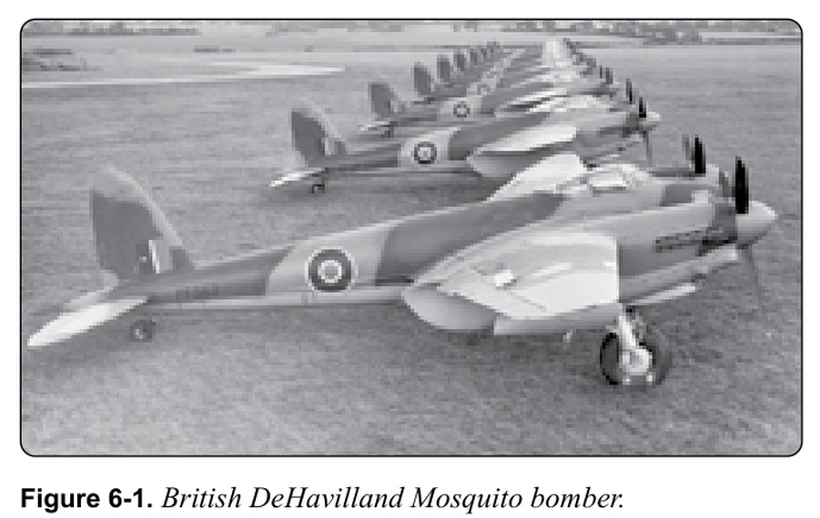
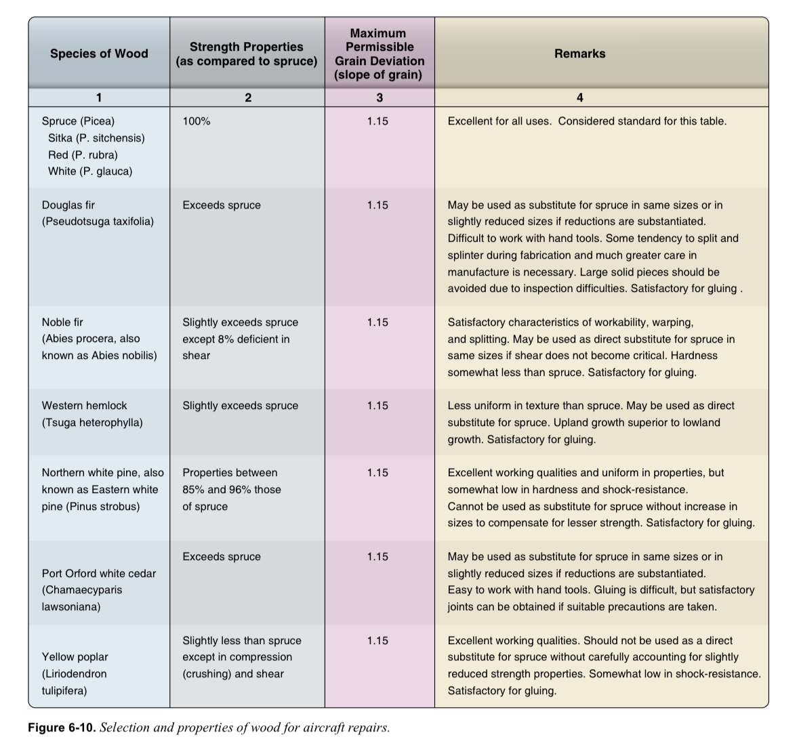
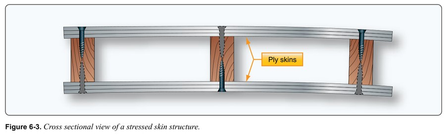
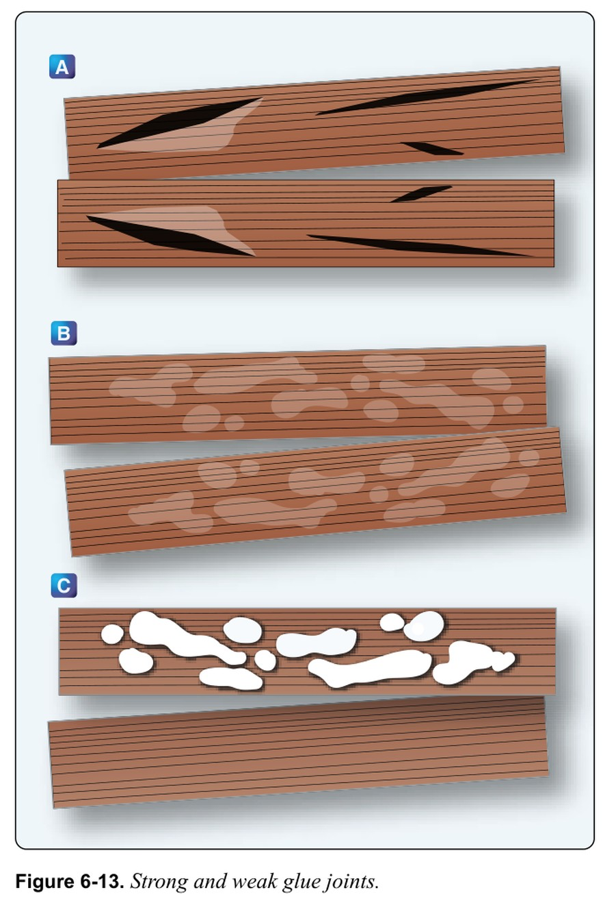
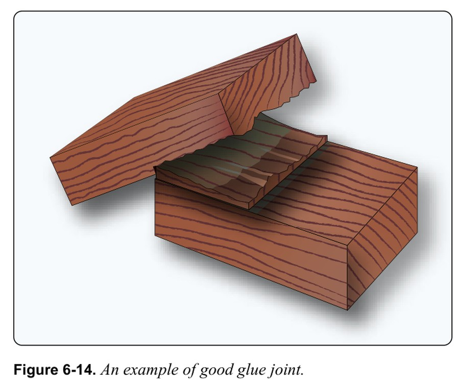
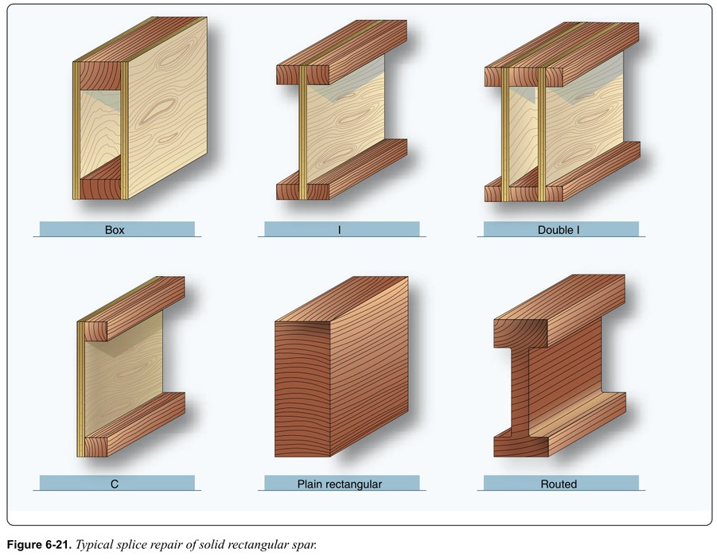
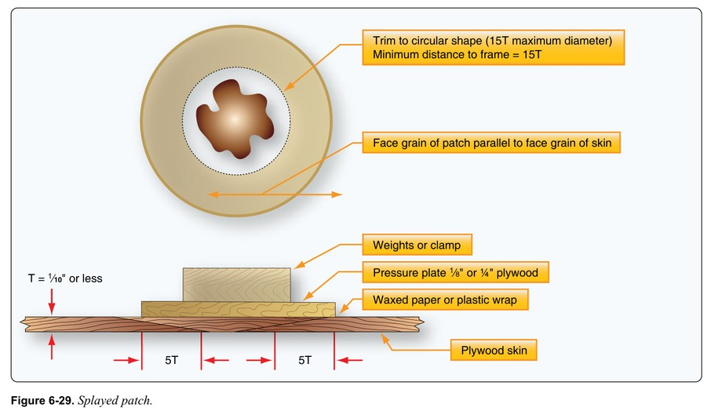

목재 구조 수리
항공기 목재 구조를 다룹니다. 시트카 스프루스·대체목·합판/라미네이트, 목재 결함 판별, 접착제, 검사법, 스파·리브·합판 외피 수리까지.
Covers aircraft wood structures: Sitka spruce and substitutes, plywood/laminated, defect identification, adhesives, inspection, and spar/rib/plywood-skin repairs.
라이트 형제의 첫 비행기부터 목재는 가용성과 높은 강도 대비 무게비 때문에 쓰였습니다. 금속(강관→모노코크 알루미늄)이 등장하며 대체됐지만, 잘 관리된 목재는 탄력이 좋아 구형 목재기가 여전히 존재하고 일부 현대 설계도 선택적으로 목재를 씁니다.From the Wright brothers' first airplane, wood was used for its availability and high strength-to-weight ratio. Metals (steel tube then monocoque aluminum) largely replaced it, but well-maintained wood is resilient, so older wooden aircraft persist and some modern designs still use wood selectively.
1) 목재기 감소 원인 — 제작·정비에 드는 추가 수작업 비용.1) Decline — the extra hand labor cost of wood construction and maintenance.
2) 참고 기준 — 특정 기종 수리는 해당 기종 구조수리매뉴얼(SRM)을 따르고, 없으면 AC 43.13-2B를 참조. 주요 구조 수리는 FAA Form 337로 승인.2) Reference — follow the aircraft's Structural Repair Manual; if none, consult AC 43.13-2B; approve major structural repairs via FAA Form 337.
정비사는 목재의 품질·상태·결함을 정확히 평가할 수 있어야 합니다.A technician must accurately assess wood quality, condition, and defects.


- A. 더글러스퍼Douglas fir
- B. 시트카 스프루스(Sitka Spruce)Sitka spruce
- C. 마호가니Mahogany
- D. 발사Balsa
- A. 카세인Casein
- B. 플라스틱 레진Plastic resin
- C. 레조르시놀(Resorcinol)Resorcinol
- D. 페놀포름알데히드Phenol-formaldehyde
- A. 색이 변해서Discolors
- B. 포어를 막고 평면을 바꿔 접착선을 약화Clogs pores and changes flatness, weakening the glue line
- C. 비싸서Costly
- D. 냄새 때문에Odor
- A. 가사시간(Pot Life)Pot life
- B. 개방조립시간Open-assembly time
- C. 가압시간(Pressing)Pressing time
- D. 경화온도Cure temperature
- A. 구조의 최고점Highest point
- B. 지상자세 기준 최저점Lowest point in ground attitude
- C. 날개 앞전Wing leading edge
- D. 동체 상부Upper fuselage
- A. 1:51:5
- B. 1:81:8
- C. 1:10~1:121:10 to 1:12
- D. 1:201:20
- A. 스파 중앙Spar center
- B. 리프트 스트럿·착륙장치 피팅 아래Under lift-strut/landing-gear fittings
- C. 날개 끝Wingtip
- D. 리브 사이Between ribs
- A. 목섬유의 지압면bearing surface of the wood fibers
- B. 접착제(Glue)glue
- C. 보강 플레이트reinforcement plates
- A. 압축 파손(Compression Failure)compression failure
- B. 전단 파손shear failure
- C. 부후(Decay)decay
- A. 건조 전 부후는 강도에 영향 없다Decay before seasoning does not affect strength
- B. 일부 종류의 제한적 부후는 허용된다A limited amount of certain decay is acceptable
- C. 어떤 형태·양의 부후도 허용되지 않는다Decay is not acceptable in any form or amount
- A. 정밀검사에서 부후가 발견되지 않을 것Careful inspection fails to reveal any decay
- B. 결 방향에 작은 영향만 줄 것They produce only a small effect on grain direction
- C. 나선·대각 결 제한을 넘지 않을 것Local irregularities do not exceed limitations for spiral and diagonal grain
- A. 결 방향에 작은 영향만 줄 때they produce a small effect on grain direction
- B. 미네랄 스트릭이 없을 때they have no mineral streaks
- C. 12인치 내 피치 포켓이 없을 때no pitch pockets are within 12 inches
- A. 조인트 분리면에 목섬유 없이 목재 자국만 남을 때when a joint separates showing only the wood imprint with no fibers clinging to the glue
- B. 분리면에 목재 조각·섬유가 붙어 있을 때when a joint separates with wood pieces/fibers clinging to the glue
- C. 어떤 조인트 분리든by any joint separation
- A. 리밍 후 하드우드 플러그·재드릴 허용it is permissible to ream, plug with hardwood, and redrill
- B. 하드우드 보강판으로 보강 가능the spar may be reinforced with hardwood plates
- C. 새 섹션을 스플라이스하거나 스파를 교체a new section should be spliced in or the spar replaced
- A. 영구 결합 전까지 부재를 임시 고정To hold members temporarily until permanent attachment
- B. 구조 결합부 검사 접근 제공To provide inspection access
- C. 교차하는 구조 부재를 결합·보강To join and reinforce intersecting structural members
- A. 결이 외피와 평행the grain is parallel to the skin
- B. 1/8인치 작게 잘라 접착제 공간 확보it is about 1/8 inch undersize for bonding material
- C. 결이 외피에 수직the grain is perpendicular to the skin
- A. 강도 증가increase strength
- B. 균일한 강도 확보obtain uniform strength
- C. 무게 감소reduce weight
시트카 스프루스(Sitka Spruce)가 기준 목재입니다. 균일성·강도·충격저항이 우수합니다.Sitka spruce is the reference wood: uniform, strong, shock-resistant.
1) 등급 기준(AN-W-2) — 가마건조, 비중 ≥0.36, 목리 기울기(Slope of Grain) ≤1:15, 수직결(Edge/Vertical Grain)로 제재, 인치당 나이테 ≥6개.1) Grade (AN-W-2) — kiln-dried, specific gravity >=0.36, grain slope <=1:15, sawn edge/vertical grain, >=6 annual rings per inch.
2) 대체목(AC 43.13-1B) — 더글러스퍼·서부헴록·노블퍼·북부화이트파인·Port Orford시더·옐로포플러. 가능하면 원래 목재와 같은 종을 쓰고, 대체 시 수리자가 모든 요건 충족을 책임짐.2) Substitutes (AC 43.13-1B) — Douglas fir, western hemlock, noble fir, northern white pine, Port Orford cedar, yellow poplar. Use the same species as the original when possible; the repairer is responsible for meeting all requirements.
3) Port Orford 시더·더글러스퍼는 예외로 인치당 나이테 8개 필요.3) Port Orford cedar and Douglas fir are exceptions needing 8 rings per inch.
라미네이트 스파로 솔리드 스파를 대체할 수 있습니다(같은 품질 목재, 항공 규격 제작 시).Laminated spars may substitute for solid spars (same quality wood, made to aviation standards).


- A. 4개4
- B. 6개6
- C. 8개8
- D. 10개10
구조용 목재의 두 가공 형태입니다.Two engineered forms of structural wood.
1) 합판(Plywood) — 마호가니·버치 베니어를 바스우드·포플러 코어 위에 열압착. 각 층의 결이 이전 층과 90° 교차. 항공용 합판은 MIL-P-6070 규격(끓는 물 3시간 침지 후 전단시험으로 접착 검증). 바스우드 합판은 더 가볍고 유연하나 강도는 약간 낮음.1) Plywood — mahogany/birch veneers hot-pressed over basswood/poplar cores; each ply's grain is 90 degrees to the previous; aviation plywood meets MIL-P-6070 (shear test after 3 hours in boiling water). Basswood plywood is lighter and more flexible but slightly weaker.
2) 라미네이트 목재(Laminated Wood) — 두 층 이상을 결이 서로 평행하게 접착(합판은 90°). 솔리드보다 강하나 덜 유연하고, 뒤틀림(Warping)에 훨씬 강함. 윙팁 보우·동체 포머 등 곡면 부품에 사용.2) Laminated wood — two or more layers bonded with grain parallel (plywood is 90 degrees); stronger but less flexible than solid, and far more warp-resistant; used for curved parts like wingtip bows and fuselage formers.
합판=결 90° 교차, 라미네이트=결 평행. 이 차이가 시험 포인트입니다.Plywood = grain crossed 90 degrees, laminated = grain parallel; this distinction is a key exam point.

- A. 둘 다 평행Both parallel
- B. 합판=90° 교차 / 라미네이트=평행Plywood=90° crossed / laminated=parallel
- C. 합판=평행 / 라미네이트=90°Plywood=parallel / laminated=90°
- D. 둘 다 90°Both 90°
정비사가 반드시 식별해야 할 목재 결함입니다. 품질 평가 시 절단 방식·목리 기울기·나이테 수를 봅니다.Wood defects a technician must identify. Quality is judged by cut, grain slope, and ring count.
허용(조건부): 크로스그레인(1:15 이내), 웨이비/컬리/인터록 그레인(규정 이내), 하드노트(3/8인치 이하·중앙 1/3·20인치 이격), 핀노트 클러스터(그레인 편향 작음), 피치포켓(규정 이내), 미네랄 줄무늬(부패 없을 때).Acceptable (conditional): cross grain (within 1:15), wavy/curly/interlocked grain (within limits), hard knots (<=3/8 in, center third, 20 in apart), pin knot clusters (small grain deviation), pitch pockets (within limits), mineral streaks (if no decay).
거부(비허용): 스파이크 노트(관통 옹이), 체크(건조 균열)·셰이크(나이테 경계 균열)·스플릿(응력 균열), 압축목(Compression Wood), 압축파괴(Compression Failure, 결 직각 미세선), 부패(Decay)·드라이롯·브라운롯(레드하트·퍼플하트 포함).Reject: spike knots (through-knots), checks (drying cracks)/shakes (ring-boundary cracks)/splits (stress cracks), compression wood, compression failure (fine lines across grain), decay/dry rot/brown rot (including red/purple heart).
압축파괴가 의심되면 현미경 검사나 강인성 시험을 하고, 애매하면 무조건 거부합니다.If compression failure is suspected, do a microscopic or toughness test; when in doubt, reject.


접착제는 목재 수리의 최종 강도에 결정적입니다. 항공 요건을 충족하는 것만, 제조사 지침대로 사용합니다.Adhesive is critical to a wood repair's final strength. Use only those meeting aviation requirements, per manufacturer instructions.
1) 카세인(Casein) — 우유 분말 접착제. 습기·온도변화로 열화. 구식·폐기 대상. 알칼리성이라 재접착 시 완전 제거 필요.1) Casein — milk-powder glue; deteriorates with moisture and temperature; obsolete; alkaline, so remove completely before re-bonding.
2) 플라스틱 레진(요소포름알데히드) — 방수·방충·방곰팡이. 고온다습·반복응력에 빠르게 열화. 구식.2) Plastic resin (urea-formaldehyde) — water/insect/mold-proof but deteriorates fast in hot-humid, cyclic stress; obsolete.
3) 레조르시놀(Resorcinol) — 2액형 합성수지. 가장 내수성이 좋고 FAA 강도·내구 요건 충족. 목재 수리에 가장 흔함.3) Resorcinol — two-part synthetic; the most water-resistant and meets FAA strength/durability; the most common in wood repair.
4) 페놀포름알데히드 — 합판 제조용. 고온·고압 필요해 현장 부적합.4) Phenol-formaldehyde — for plywood manufacture; needs high heat/pressure, impractical in the field.
5) 에폭시(Epoxy) — 2액형. 작업성 우수, 침투 고름. 습도·온도가 이음 내구성에 영향.5) Epoxy — two-part; excellent working properties, even penetration; humidity/temperature affect joint durability.


강하고 내구성 있는 접착의 3대 요건: ①표면 준비, ②양질의 접착제, ③올바른 접착 기법.Three requirements for a strong, durable bond: surface preparation, quality adhesive, correct technique.
표면 준비 — 깨끗·건조·무유분. 가는 톱으로 베벨 절단 후 대패·스크레이퍼로 평활. 샌드페이퍼 금지(모서리 둥글어지고 포어 막혀 약한 접착선). 결합할 목재는 24시간 이상 같은 방에 두어 함수율 균등화.Surface prep — clean, dry, oil-free; bevel-cut with a fine saw then plane/scrape smooth; never sandpaper (rounds corners, clogs pores, weak glue line); keep pieces in the same room >=24 hours to equalize moisture.
엔드그레인(결 직각 절단면) 접착 회피 — 스카프 조인트는 양쪽 결을 최대한 평행하게.Avoid end-grain gluing; scarf joints keep both grains as parallel as possible.
4대 시간(대부분 접착제): 가사시간(Pot Life, 혼합~사용 한계), 개방조립시간(Open Assembly), 폐쇄조립시간(Closed Assembly), 가압시간(Pressing, 경화기간). 70°F 이상 유지해야 제대로 경화.Four critical times: pot life (mix to use), open assembly, closed assembly, pressing (cure); maintain >=70 F for proper cure.
클램핑 압력 — 연목(Softwood) 125~150psi, 경목(Hardwood) 150~200psi(레조르시놀 기준). 너무 약하면 두꺼운 접착선(약함), 너무 강하면 접착제 과다 유출(약함).Clamping pressure — softwood 125-150 psi, hardwood 150-200 psi (resorcinol); too little gives thick weak lines, too much squeezes out glue and weakens the joint.



목재 손상은 대부분 습기·온도·햇빛에서 옵니다. 유기재라 습기 노출 시 곰팡이·부패에 취약합니다. 환기 잘 되는 격납고에 보관하고 배수·환기 구멍을 열어둡니다.Wood damage comes mostly from moisture, temperature, and sunlight. As an organic material it's prone to mildew and rot when exposed; store in a well-ventilated hangar with drain/vent holes open.
검사법:Methods:
1) 수분미터(Moisture Meter) — 프로브로 함수율 측정. 높으면 건조 후 검사.1) Moisture meter — probe measures moisture content; dry before inspecting if high.
2) 태핑(Tapping) — 가벼운 플라스틱 해머로 두드림. 건전한 목재는 선명한 소리, 빈 소리·물렁하면 추가 검사.2) Tapping — a light plastic hammer; sound wood rings sharp, hollow/soft needs further check.
3) 프로빙(Probing) — 날카로운 도구로 찔러 확인. 물렁·부슬하면 부패.3) Probing — a sharp tool; soft/crumbly means rot.
4) 프라잉(Prying) — 이음부를 살짝 벌려 접착 분리 확인(과한 힘 금지).4) Prying — gently open a joint to check bond separation (no excess force).
5) 냄새(Smelling) — 곰팡내·습한 냄새는 부패 신호.5) Smelling — musty/moldy odor signals rot.
부패는 항상 최저점(지상자세 기준)에서 시작. 프로브 시 목재가 청크로 뜯기면 부패, 스플린터(가시)로 갈라지면 건전합니다.Rot starts at the lowest point (ground attitude). When probed, wood that lifts in a chunk is rotten; wood that splinters is sound.
수리 기본 원칙: 원래만큼 강해야 하고, 강성·공기역학적 형상도 동등해야 합니다.Basic principle: a repair must be as strong as the original, with equivalent rigidity and aerodynamic shape.
1) 스파 종류 — 솔리드, 라우티드 I빔, 라미네이트, 빌트업 박스/I빔/C. 빌트업 박스 스파가 최대 하중을 받아 수리가 가장 critical(승인 도면 필수).1) Spar types — solid, routed I-beam, laminated, built-up box/I/C; the built-up box spar carries the heaviest loads and is most critical (approved drawings required).
2) 솔리드 스파 세로균열 — 양쪽에 스프루스/합판 리인포스먼트 플레이트 접착(스파 두께의 1/4, 균열 끝 너머 스파 두께의 3배). 못 금지.2) Solid spar longitudinal crack — glue spruce/plywood reinforcement plates on both sides (1/4 the spar thickness, extending 3x the spar thickness beyond the crack ends); no nails.
3) 스카프 조인트 — 1:10~1:12 테이퍼. 스파당 스플라이스 최대 2개. 날개뿌리·착륙장치·엔진마운트·리프트/인터플레인 스트럿 피팅 아래에는 스플라이스 금지.3) Scarf joint — 1:10 to 1:12 taper; max two splices per spar; no splice under wing-root, landing-gear, engine-mount, lift, or interplane-strut fittings.
4) 리브 캡스트립 — 10:1~12:1 테이퍼 절단 후 신재 접합, 합판 페이스플레이트 보강. 트레일링에지 리브는 배수 그로밋 막힘으로 부패 잦음.4) Rib cap strips — 10:1 to 12:1 taper cut, splice new material, reinforce with plywood faceplates; trailing-edge ribs rot often from clogged drainage grommets.



합판 외피는 비행 하중을 크게 받으므로 제조사 지침·AC 43.13-1B를 엄수합니다. 사각 패치는 응력 집중을 만들므로 원형/타원형 패치를 씁니다.Plywood skin carries large flight loads, so follow manufacturer data and AC 43.13-1B strictly. Square patches concentrate stress, so use circular/elliptical patches.
1) 스플레이드 패치(Splayed) — 얇은 합판(≤1/10인치)의 작은 구멍. 구멍 지름 ≤15T(두께배수), 외곽 5T 추가. 결을 외피와 평행하게.1) Splayed patch — small holes in thin plywood (<=1/10 in); hole diameter <=15T, plus 5T outer; align grain parallel to the skin.
2) 서피스 패치(Surface) — 큰 구멍에 표면 부착 후 우포로 덮어 마감. 미관은 떨어지나 간단·경제적.2) Surface patch — surface-applied over large holes, covered with fabric; less attractive but simple and economical.
3) 플러그 패치(Plug) — 원/타원으로 다듬고 내부에 더블러를 대어 플러그를 접착. 평면 마감.3) Plug patch — trimmed round/oval with an inner doubler, plug glued flush.
4) 스카프드 패치(Scarfed) — 가장 어렵지만 두께·강성 변화가 최소라 응력 구조 수리에 선호. 최대 지름 25T, 프레임 최소 이격 16T.4) Scarfed patch — hardest but changes thickness/rigidity least, preferred for stressed repairs; max diameter 25T, minimum 16T from a frame.
수리 후 로트억제 실러로 처리하고 재도포합니다.After repair, treat with a rot-inhibiting sealer and refinish.



- A. 스플레이드 패치Splayed patch
- B. 서피스 패치Surface patch
- C. 플러그 패치Plug patch
- D. 스카프드 패치(Scarfed)Scarfed patch
투명 플라스틱의 종류와 식별 📙 Jeppesen 참고
Transparent Plastics: Types & Identification항공기 창·풍방용 투명 열가소성(thermoplastic)은 두 가지입니다. 셀룰로오스 아세테이트는 구형으로, 치수가 불안정하고 시간이 지나면 황변해 지금은 거의 안 쓰며 아크릴의 대체재로 인정되지 않습니다. 아크릴(루사이트·플렉시글라스, 영국명 퍼스펙스)은 일반(MIL-P-6886)·내열(MIL-P-5425)·내크레이즈(MIL-P-8184) 규격이 있습니다.Two transparent thermoplastics are used for aircraft windows/windshields. Cellulose acetate is the older type — dimensionally unstable and yellows over time, so it's rarely used now and isn't an accepted acrylic substitute. Acrylic (Lucite, Plexiglas; British Perspex) comes as regular (MIL-P-6886), heat-resistant (MIL-P-5425), and craze-resistant (MIL-P-8184).
아크릴과 아세테이트 구분: 아세톤을 조금 문지르면 아크릴은 하얗게 변하나 물러지지 않고, 아세테이트는 색 변화 없이 물러집니다. 확실히 하려면 조각을 태워봅니다 — 아크릴은 맑고 일정한 불꽃에 향이 다소 좋고, 아세테이트는 튀는 불꽃·검은 연기에 불쾌한 냄새가 납니다. 표면에 수천 개 미세균열이 생긴 상태를 '크레이징(crazing)'이라 합니다.To tell acrylic from acetate: rub on a little acetone — acrylic turns white but doesn't soften, while acetate softens without color change. To be sure, burn a scrap — acrylic burns with a steady clear flame and a somewhat pleasant odor, acetate with a sputtering flame, dark smoke, and an unpleasant odor. Thousands of tiny surface cracks are called 'crazing.'
아크릴 성형: 냉간·가열·복합곡면 📙 Jeppesen 참고
Acrylic Forming: Cold, Heated & Compound아크릴은 얇고 굽힘반경이 두께의 최소 180배면 냉간 단일곡면으로 굽힐 수 있고, 이를 넘기면 표면 응력으로 미세균열이 생깁니다. 가열성형 전에는 마스킹지·접착제를 모두 제거하고 세척·건조합니다. 균일 가열을 위해 120~347°F(49~190°C) 강제순환 오븐에 시트를 수직으로 겁니다. 절대 끓는 물·증기로 직접 가열하지 않습니다(뿌옇게 됨).Acrylic can be cold-bent into a single curve if thin and the bend radius is at least 180× the thickness; beyond that, surface stress causes tiny cracks. Before hot forming, remove all masking paper and adhesive, then wash and dry. For even heating, hang sheets vertically in a forced-air oven at 120–347°F (49–190°C). Never heat directly with boiling water or steam (it turns milky).
성형 온도는 재질·두께·형상 복잡도에 따라 오르며, 단순곡면이 복합곡면보다 낮은 온도를 씁니다. 복합곡면은 스트레치 성형, 수·암 다이 성형, 몰드 없는 진공성형(공기를 빼면 대기압이 뜨거운 시트를 밀어 캐노피 버블 형성), 암몰드 진공성형의 네 방법이 있습니다. 직선 절단엔 원형톱, 곡선엔 밴드톱을 쓰고, 드릴은 포함각 약 150°·레이크각 0°로 갈아 씁니다.Forming temperature rises with material, thickness, and shape complexity — simple curves need less heat than compound curves. Compound curves use four methods: stretch forming, male-and-female die forming, vacuum forming without molds (evacuating air lets atmospheric pressure push the hot sheet into a canopy bubble), and vacuum forming with a female mold. Use a circular saw for straight cuts, a band saw for curves, and drills ground to ~150° included angle with 0° rake.


저장·접합·수리·세척 📙 Jeppesen 참고
Storage, Cementing, Repair & Cleaning투명 열가소재는 열에 물러지므로 난방기·증기관에서 떨어진 서늘·건조한 곳에, 마스킹지를 붙인 채 수직에서 10° 기운 빈에 보관해 휘어짐을 막습니다. 아크릴 접합은 에틸렌디클로라이드로 하며, 침지법(한쪽을 10분 담가 쿠션 형성 후 압착)과 접착제법(아크릴 부스러기를 녹여 시럽상)이 있습니다. 용제로 팽창했다 증발하며 수축하므로 스프링클램프로 일정 압력을 유지하고, 122°F에서 48시간 큐어링하면 강도가 커집니다.Transparent thermoplastics soften with heat, so store them cool and dry away from heaters/steam pipes, with masking paper on, in bins tilted 10° from vertical to prevent buckling. Cement acrylic with ethylene dichloride by soaking (soak one edge ~10 min to form a cushion, then press) or gluing (dissolve acrylic shavings into a syrup). Since it expands with solvent then shrinks as it evaporates, hold even pressure with spring clamps, and curing at 122°F for 48 hours builds strength.
풍방은 손상 시 대개 교체하지만, 정비지까지 비행할 임시수리는 균열 끝을 넘버 30 드릴로 스톱드릴한 뒤 황동 안전결선으로 꿰거나 작은 기계나사·와셔로 조여 막습니다. 시야를 방해하지 않는 미세균열은 스톱드릴 후 에틸렌디클로라이드를 주사기로 채워 영구수리할 수 있습니다. 세척은 순한 비누·흐르는 물로만 하고 승인된 클리너·왁스로 마무리합니다(왁스가 미세흠을 메워 빗물이 구슬로 맺힘). 여압기 창은 규정 최소두께 아래로 갈아내지 않습니다.Damaged windshields are usually replaced, but for a temporary repair to fly to a shop, stop-drill the crack ends with a No. 30 drill, then lace with brass safety wire or clamp with small machine screws and washers. Minor cracks that don't block vision can be permanently repaired by stop-drilling then filling with ethylene dichloride via a syringe. Clean only with mild soap and running water, finishing with approved cleaner and wax (wax fills fine scratches so rain beads). Never sand a pressurized-aircraft window below its minimum allowable thickness.


🗣 ASA 구술시험 (Oral Exam) Typical Oral Questions
📝 ACS 객관식 퀴즈 ACS Multiple-Choice Quiz
FAA 핸드북 전체 도면
FAA Handbook FiguresNo FAA Handbook figures for this chapter, or not yet uploaded.